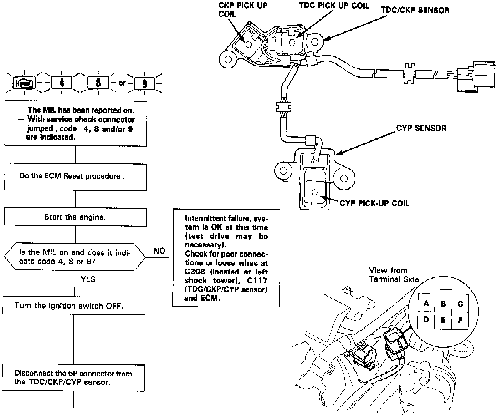
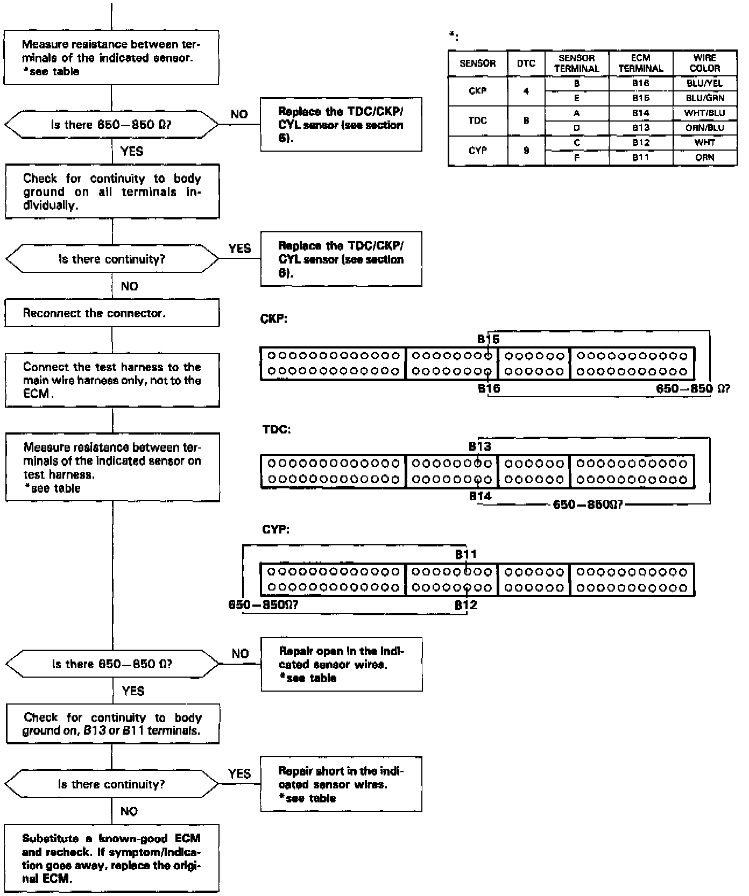

Operation CHARM
: Car repair manuals for everyone.
Home
>>
Acura
>>
1994
>>
Vigor L5-2451cc 2.5L SOHC G25A4 FI
>>
Repair and Diagnosis
>>
Powertrain Management
>>
Computers and Control Systems
>>
Sensors and Switches - Computers and Control Systems
>>
Crankshaft Position Sensor
>>
Testing and Inspection
Crankshaft Position Sensor: Testing and Inspection


Follow the steps as shown in the Troubleshooting Flowchart.